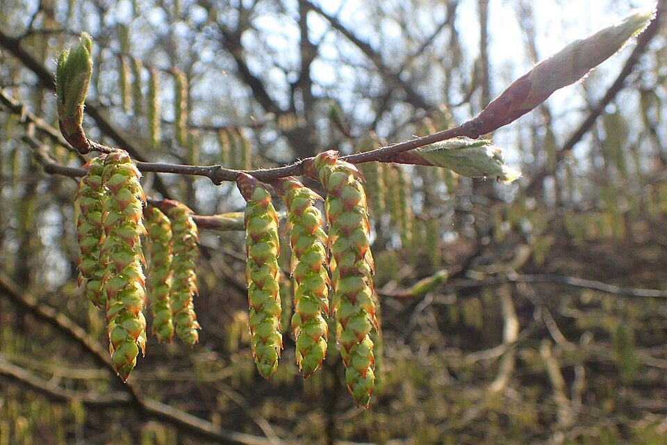

Carpino: uso tradizionale, proprietà e avvertenze
Carpinus betulus

Albero dei boschi europei dal legno molto duro e dalla corteccia liscia e grigio-argentea. Le foglie e la corteccia contengono tannini e polifenoli.
Proprietà attribuite dalla tradizione
- Uso tradizionaleUsato in uso interno come astringente e collutorio per infiammazioni di bocca e gola, e in uso esterno come cicatrizzante per piaghe, ferite e screpolature. Nella tradizione è citato anche per disturbi gastrointestinali lievi (erbeofficinali.org).
- Evidenza preliminareStudi in vitro e su animali suggeriscono attività antiossidante, antinfiammatoria, antimicrobica e ipoglicemizzante, con un possibile effetto antitumorale solo in vitro. Non ci sono conferme cliniche sull'uomo (erbeofficinali.org).
- Efficacia non dimostrataNon ci sono studi clinici controllati né revisioni sistematiche sulla specie, e non esiste un uso fitoterapico consolidato. Le indicazioni tradizionali (per esempio per tosse, bronchite, sinusite, astenia e spasmi) restano prive di prove (erbeofficinali.org).
Uso tradizionale
Le parti usate sono foglie e corteccia, e in alcuni preparati le gemme. La scheda di riferimento giudica l'evidenza complessiva insufficiente e preliminare. Non riporta dosi validate, e le preparazioni commerciali non sono standardizzate in modo uniforme.
Sicurezza
La tossicità non è stata studiata. Non ci sono dati tossicologici sistematici sull'uso nell'uomo, né dati su farmacocinetica, interazioni e uso prolungato. Per questo la sicurezza non può essere definita (erbeofficinali.org). La lista armonizzata di piante (Sezione A) classifica il carpino come 'OK' con classe 2, perché le foglie contengono feoforbide, un prodotto della degradazione della clorofilla con proprietà citotossiche. Una scheda di sicurezza di un macerato di gemme di carpino (2009) segnala irritazione di pelle, occhi e mucose e infiammabilità del prodotto: è un documento per la manipolazione in ambito lavorativo, non un dato sull'uso fitoterapico.
Avvertenze e controindicazioni
Non sono documentate controindicazioni specifiche per la specie. I tannini possono ridurre l'assorbimento dei farmaci assunti per bocca e di alcuni minerali, come il ferro: è un rischio plausibile in base alle proprietà generali dei tannini, non confermato da studi sul carpino, quindi conviene separare le assunzioni. Consulta il medico prima dell'uso, in particolare in gravidanza, allattamento, in presenza di patologie o di farmaci in corso, e in caso di tosse persistente o mal di gola ricorrente.
Fonti
- erbeofficinali.org, scheda Carpinus betulus L. (versione mobile), consultata il 16 novembre 2026.
- Elenco armonizzato di piante, Sezione A (documento senza data).
- Scheda di sicurezza, Gemmo Carpinus betulus Mazerat, versione 1, 08.12.2009.